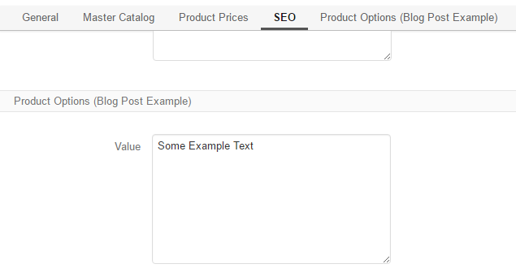
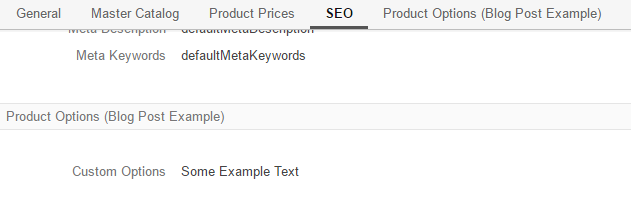

OroCommerce equips users and developers with powerful UIs that they can use to manage both simple and complex data entities, including all entity attributes (fields) and relations. As a developer, you can easily enable standard CRUD pages for a new entity, and with the same ease, you can add more fields to any of the entities that you have created before. Just add new entity properties, create a migration script and modify the templates if necessary.
But what if you need to add a few more fields to one of the OroCommerce built-in entities, or to an entity that has been created by somebody else’s extension? Where would you start?
Editing the OroCommerce source code or the code for third party extensions is never a good idea. In this article, we will show you how to customize the CRUD pages of the existing entities with the custom code in your own bundle.
Note
CRUD stands for Create, Read, Update and Delete operations. They are commonly accompanied by some sort of listing or navigation that allows to retrieve, sort and filter multiple records at once. In the context of OroCommerce the data management UIs for the above operations are represented by the following pages:
For the purpose of the today’s exercise, we will be adding a new text field to the product edit and view screens from our custom bundle.
Before we start writing code, you should create a new bundle in your application. If you are not familiar with bundle creation process yet, please check the article about how to create a new bundle in OroPlatform, OroCRM, or OroCommerce. If you have already created a bundle for your app customizations, you are good to go and may reuse it in other tutorials as well.
As the first step we will create a new entity to store our custom data. It is still possible to create new product entity fields from your custom bundle, but we will show how you can add some data that is stored elsewhere (it may as well be calculated on the fly or submitted to an external web-service for storage).
Note
Please check the How to Create Entities article in the OroCookbook to learn more.
Let’s also make our entity compliant with the ProductHolderInterface so it will be possible to reuse it in other places (e.g. reports). Other than the reference to the product, our entity will have only one text field to store our data. You can add multiple fields and use other data types according to your requirements.
This is how our custom entity will look like:
1 2 3 4 5 6 7 8 9 10 11 12 13 14 15 16 17 18 19 20 21 22 23 24 25 26 27 28 29 30 31 32 33 | //src/Oro/Bundle/BlogPostExampleBundle/Entity/ProductOptions.php
/**
* @ORM\Table(name="oro_bpe_prod_opts")
* @ORM\Entity
*/
class ProductOptions implements ProductHolderInterface
{
/**
* @var integer
*
* @ORM\Id
* @ORM\Column(type="integer")
* @ORM\GeneratedValue(strategy="AUTO")
*/
protected $id;
/**
* @var Product
*
* @ORM\ManyToOne(targetEntity="OroB2B\Bundle\ProductBundle\Entity\Product")
* @ORM\JoinColumn(name="product_id", referencedColumnName="id", nullable=false, onDelete="CASCADE")
*/
protected $product;
/**
* @var string
*
* @ORM\Column(name="value", type="text")
*/
protected $value;
// ..... Getters & Setters implementations .....
}
|
It might be not necessary for this exercise, but if you plan to distribute your custom bundle, or if you want to deploy it later to another application or machine, you have to create the installation and migration scripts. The installation script should create the required database structures during application installation, and the migration scripts will be used to update your module in the application to a specific version.
Note
More information about migrations is available in the OroMigrationBundle documentation.
We are going to have only one version of our custom bundle in this blog post, so the installation and migration code will look very similar.
Installation:
1 2 3 4 5 6 7 8 9 10 11 12 13 14 15 16 17 18 19 20 21 22 23 24 25 26 27 28 29 30 31 32 33 34 35 36 37 38 39 40 41 42 43 44 45 46 47 48 49 50 51 52 53 54 | //src/Oro/Bundle/BlogPostExampleBundle/Migrations/Schema/OroBlogPostExampleBundleInstaller.php
class OroBlogPostExampleBundleInstaller implements Installation
{
/**
* {@inheritdoc}
*/
public function getMigrationVersion()
{
return 'v1_0';
}
/**
* {@inheritdoc}
*/
public function up(Schema $schema, QueryBag $queries)
{
/** Tables generation **/
$this->createOroBpeProdOptsTable($schema);
/** Foreign keys generation **/
$this->addOroBpeProdOptsForeignKeys($schema);
}
/**
* Create oro_bpe_prod_opts table
*
* @param Schema $schema
*/
protected function createOroBpeProdOptsTable(Schema $schema)
{
$table = $schema->createTable('oro_bpe_prod_opts');
$table->addColumn('id', 'integer', ['autoincrement' => true]);
$table->addColumn('product_id', 'integer', []);
$table->addColumn('value', 'text', []);
$table->setPrimaryKey(['id']);
$table->addIndex(['product_id']);
}
/**
* Add oro_bpe_prod_opts foreign keys.
*
* @param Schema $schema
*/
protected function addOroBpeProdOptsForeignKeys(Schema $schema)
{
$table = $schema->getTable('oro_bpe_prod_opts');
$table->addForeignKeyConstraint(
$schema->getTable('orob2b_product'),
['product_id'],
['id'],
['onDelete' => 'CASCADE', 'onUpdate' => null]
);
}
}
|
Migration:
1 2 3 4 5 6 7 8 9 10 11 12 13 14 15 16 17 18 19 20 21 22 23 24 25 26 27 28 29 30 31 32 33 34 35 36 37 38 39 40 41 42 43 44 45 46 | //src/Oro/Bundle/BlogPostExampleBundle/Migrations/Schema/v1_0/OroBlogPostExampleBundle.php
class OroBlogPostExampleBundle implements Migration
{
/**
* {@inheritdoc}
*/
public function up(Schema $schema, QueryBag $queries)
{
/** Tables generation **/
$this->createOroBpeProdOptsTable($schema);
/** Foreign keys generation **/
$this->addOroBpeProdOptsForeignKeys($schema);
}
/**
* Create oro_bpe_prod_opts table
*
* @param Schema $schema
*/
protected function createOroBpeProdOptsTable(Schema $schema)
{
$table = $schema->createTable('oro_bpe_prod_opts');
$table->addColumn('id', 'integer', ['autoincrement' => true]);
$table->addColumn('product_id', 'integer', []);
$table->addColumn('value', 'text', []);
$table->setPrimaryKey(['id']);
$table->addIndex(['product_id']);
}
/**
* Add oro_bpe_prod_opts foreign keys.
*
* @param Schema $schema
*/
protected function addOroBpeProdOptsForeignKeys(Schema $schema)
{
$table = $schema->getTable('oro_bpe_prod_opts');
$table->addForeignKeyConstraint(
$schema->getTable('orob2b_product'),
['product_id'],
['id'],
['onDelete' => 'CASCADE', 'onUpdate' => null]
);
}
}
|
In order to customize the new product field, we need to implement a corresponding form type that will be used in the main form on the product create and edit pages:
1 2 3 4 5 6 7 8 9 10 11 12 13 14 15 16 17 18 19 20 21 22 23 24 25 26 27 28 29 30 31 32 33 34 35 36 37 38 39 40 41 42 43 44 | //src/Oro/Bundle/BlogPostExampleBundle/Form/Type/ProductOptionsType.php
class ProductOptionsType extends AbstractType
{
const NAME = 'oro_blogpostexample_product_options';
/** @var string */
protected $dataClass;
/**
* @param string $dataClass
*/
public function setDataClass($dataClass)
{
$this->dataClass = $dataClass;
}
/**
* {@inheritdoc}
*/
public function buildForm(FormBuilderInterface $builder, array $options)
{
$builder->add('value');
}
/**
* {@inheritdoc}
*/
public function configureOptions(OptionsResolver $resolver)
{
$resolver->setDefaults(
[
'data_class' => $this->dataClass
]
);
}
/**
* {@inheritdoc}
*/
public function getName()
{
return self::NAME;
}
}
|
The setDataClass method is used here to provide more flexibility while allowing for the re-use of this form type. Using it like this is optional.
Once you have your new form type, it should be registered in the service container to be recognizable by the Symfony’s form factory:
1 2 3 4 5 6 7 8 | #src/Oro/Bundle/BlogPostExampleBundle/Resources/config/form_types.yml
services:
oro_blogpostexample.form.type.product_options:
class: Oro\Bundle\BlogPostExampleBundle\Form\Type\ProductOptionsType
calls:
- [setDataClass, ['%oro_blogpostexample.entity.product_options.class%']]
tags:
- { name: form.type, alias: oro_blogpostexample_product_options }
|
Any integrations between different form types within OroCommerce can use form type extension to tie in the form types together. In our case, we need to list the following form events:
- FormEvents::POST_SET_DATA – it will be used to assign values to the form from our custom entity object;
- FormEvents::POST_SUBMIT – it will be used to convert, validate and persist our custom values.
1 2 3 4 5 6 7 8 9 10 11 12 13 14 15 16 17 18 19 20 21 22 23 24 25 26 27 28 29 30 31 32 33 34 35 36 37 38 39 40 41 42 43 44 45 46 47 48 49 50 51 52 53 54 55 56 57 58 59 60 61 62 63 64 65 66 67 68 69 70 71 72 73 74 75 76 77 78 79 80 81 82 83 84 85 86 87 88 89 90 91 92 93 94 95 96 97 98 99 100 101 102 103 104 | //src/Oro/Bundle/BlogPostExampleBundle/Form/Extension/ProductFormExtension.php
class ProductFormExtension extends AbstractTypeExtension
{
const FORM_ELEMENT_NAME = 'oro_blogpostexample_product_options';
/** @var ManagerRegistry */
protected $registry;
/**
* @param ManagerRegistry $registry
*/
public function __construct(ManagerRegistry $registry)
{
$this->registry = $registry;
}
/**
* {@inheritdoc}
*/
public function getExtendedType()
{
return ProductType::NAME;
}
/**
* {@inheritdoc}
*/
public function buildForm(FormBuilderInterface $builder, array $options)
{
//Appending Parent form with our custom form
$builder->add(
self::FORM_ELEMENT_NAME,
ProductOptionsType::NAME,
[
'label' => 'oro.blogpostexample.product_options.entity_label',
'required' => false,
'mapped' => false,
]
);
//Subscribing to events
$builder->addEventListener(FormEvents::POST_SET_DATA, [$this, 'onPostSetData']);
$builder->addEventListener(FormEvents::POST_SUBMIT, [$this, 'onPostSubmit'], 10);
}
/**
* @param FormEvent $event
*/
public function onPostSetData(FormEvent $event)
{
/** @var Product|null $product */
$product = $event->getData();
if (!$product || !$product->getId()) {
return;
}
$options = $this->getProductOptionsRepository()
->findOneBy(['product' => $product]);
$event->getForm()->get(self::FORM_ELEMENT_NAME)->setData($options);
}
/**
* @param FormEvent $event
*/
public function onPostSubmit(FormEvent $event)
{
/** @var Product|null $product */
$product = $event->getData();
if (!$product) {
return;
}
/** @var ProductOptionsType $form */
$form = $event->getForm();
/** @var ProductOptions $options */
$options = $form->get(self::FORM_ELEMENT_NAME)->getData();
$options->setProduct($product);
if (!$form->isValid()) {
return;
}
$this->getProductOptionsObjectManager()->persist($options);
}
/**
* @return ObjectManager|null
*/
protected function getProductOptionsObjectManager()
{
return $this->registry->getManagerForClass(ProductOptions::class);
}
/**
* @return ObjectRepository
*/
protected function getProductOptionsRepository()
{
return $this->getProductOptionsObjectManager()
->getRepository(ProductOptions::class);
}
}
|
Our new form type extension should also be registered in the service container:
1 2 3 4 5 6 7 8 9 10 11 | #src/Oro/Bundle/BlogPostExampleBundle/Resources/config/form_types.yml
services:
# ..... Form Definition .....
oro_blogpostexample.form.extension.product_type:
class: 'Oro\Bundle\BlogPostExampleBundle\Form\Extension\ProductFormExtension'
public: true
arguments:
- "@doctrine"
tags:
- { name: form.type_extension, alias: oro_product }
|
Once the entity, the form type, and the form type extension are created, we can start customizing the User Interface.
Note
Additional information about the UI customization is available in the Layout seciton.
In our case, the custom data should be added to the product view page and the product edit/create pages, so we will use the following dataTargets:
1 2 3 4 5 6 7 8 9 10 11 12 13 14 | #src/Oro/Bundle/BlogPostExampleBundle/Resources/config/services.yml
services:
oro_blogpostexample.event_listener.form_view.product:
class: 'Oro\Bundle\BlogPostExampleBundle\EventListener\ProductFormListener'
arguments:
- '@translator'
- '@oro_entity.doctrine_helper'
- '@oro_blogpostexample.product_options.provider'
- '@request_stack'
tags:
- { name: kernel.event_listener, event: oro_ui.scroll_data.before.product-view, method: onProductView }
- { name: kernel.event_listener, event: oro_ui.scroll_data.before.product-edit, method: onProductEdit }
- { name: kernel.event_listener, event: oro_ui.scroll_data.before.product-create-step-two, method: onProductEdit }
|
The event listener may be implemented as follows:
1 2 3 4 5 6 7 8 9 10 11 12 13 14 15 16 17 18 19 20 21 22 23 24 25 26 27 28 29 30 31 32 33 34 35 36 37 38 39 40 41 42 43 44 45 46 47 48 49 50 51 52 53 54 55 56 57 58 59 60 61 62 63 64 65 66 67 68 69 70 71 72 73 74 75 76 77 78 79 80 81 82 83 84 85 86 87 88 89 90 91 92 93 94 95 96 97 | //src/Oro/Bundle/BlogPostExampleBundle/EventListener/ProductFormListener.php
class ProductFormListener
{
/** @var TranslatorInterface */
protected $translator;
/** @var DoctrineHelper */
protected $doctrineHelper;
/** @var ProductOptionsProvider */
protected $productOptionsProvider;
/** @var RequestStack */
protected $requestStack;
/**
* @param TranslatorInterface $translator
* @param DoctrineHelper $doctrineHelper
* @param ProductOptionsProvider $productOptionsProvider
* @param RequestStack $requestStack
*/
public function __construct(
TranslatorInterface $translator,
DoctrineHelper $doctrineHelper,
ProductOptionsProvider $productOptionsProvider,
RequestStack $requestStack
) {
$this->translator = $translator;
$this->doctrineHelper = $doctrineHelper;
$this->productOptionsProvider = $productOptionsProvider;
$this->requestStack = $requestStack;
}
/**
* @param BeforeListRenderEvent $event
*/
public function onProductView(BeforeListRenderEvent $event)
{
$request = $this->requestStack->getCurrentRequest();
if (!$request) {
return;
}
// Retrieving current Product Id from request
$productId = (int)$request->get('id');
if (!$productId) {
return;
}
/** @var Product $product */
$product = $this->doctrineHelper->getEntityReference(Product::class, $productId);
if (!$product) {
return;
}
$productOptions = $this->productOptionsProvider->getOptionsByProduct($product);
if (null === $productOptions) {
return;
}
$template = $event->getEnvironment()->render(
'OroB2BBlogPostExampleBundle:Product:product_options_view.html.twig',
[
'entity' => $product,
'productOptions' => $productOptions
]
);
$this->addBlock($event->getScrollData(), $template, 'oro.blogpostexample.product.section.product_options');
}
/**
* @param BeforeListRenderEvent $event
*/
public function onProductEdit(BeforeListRenderEvent $event)
{
$template = $event->getEnvironment()->render(
'OroB2BBlogPostExampleBundle:Product:product_options_update.html.twig',
['form' => $event->getFormView()]
);
$this->addBlock($event->getScrollData(), $template, 'oro.blogpostexample.product.section.product_options');
}
/**
* @param ScrollData $scrollData
* @param string $html
* @param string $label
* @param int $priority
*/
protected function addBlock(ScrollData $scrollData, $html, $label, $priority = 100)
{
$blockLabel = $this->translator->trans($label);
$blockId = $scrollData->addBlock($blockLabel, $priority);
$subBlockId = $scrollData->addSubBlock($blockId);
$scrollData->addSubBlockData($blockId, $subBlockId, $html);
}
}
|
Templates
And finally, we can define the templates – one for the form:
1 2 3 4 | {# //src/Oro/Bundle/BlogPostExampleBundle/Resources/views/Product/product_options_update.html.twig #}
{{ form_widget(form.oro_blogpostexample_product_options) }}
{{ form_errors(form.oro_blogpostexample_product_options) }}
|
and one for the view:
1 2 3 4 5 | //src/Oro/Bundle/BlogPostExampleBundle/Resources/views/Product/product_options_view.html.twig
{% import 'OroUIBundle::macros.html.twig' as UI %}
{{ UI.renderHtmlProperty('oro.blogpostexample.product_options.label'| trans, productOptions.value) }}
|
As a result, the following blocks will be shown on the product edit and create pages:
In view mode, the block looks as follows:
A fully working example, organized into a custom bundle is available here (Download 13.47 KB).
In order to add this bundle to your application:
Please extract the content of the zip archive into a source code directory that is recognized by your composer autoload settings;
Clear the application cache with the following command:
php app/console clear:cache
and run the migrations with the following command:
app oro:migration:load –force –bundles=OroBlogPostExampleBundle